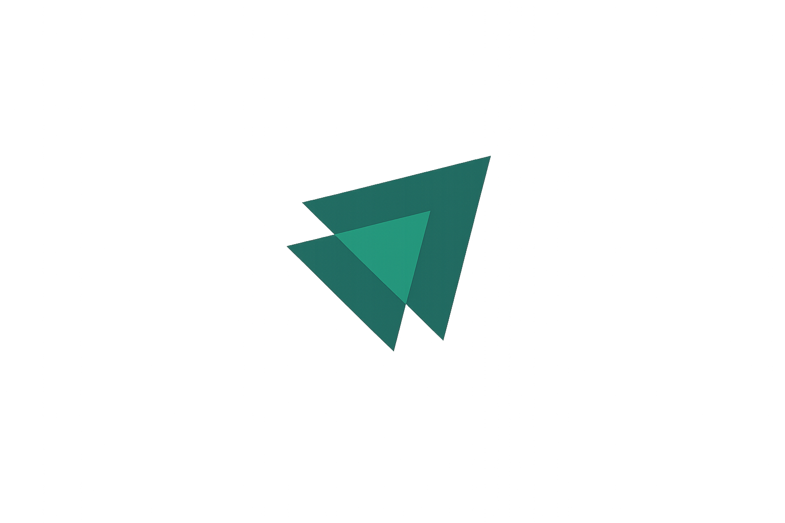
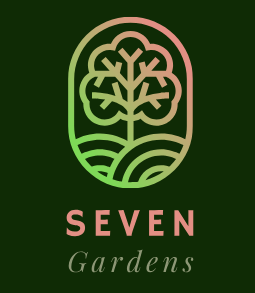

Ignite Social
Aplicação web que simula uma rede social, com foco em componentização, gerenciamento de estado e boas práticas de interface.
Ver projetoDesenvolvedor de Software
Construo automações, agentes de IA e aplicações web que transformam processos manuais em soluções eficientes — com foco em performance, clareza e resultado.
Sobre
Formado em Análise e Desenvolvimento de Sistemas, com experiência em automação de processos, dados e desenvolvimento de soluções inteligentes para a web.
Atuei no Banco do Brasil com Python, SQL e JavaScript, desenvolvendo automações e agentes de inteligência artificial que reduziram significativamente o tempo de processos internos. Tenho vivência em metodologias ágeis (Scrum e Kanban) e integração entre equipes.
Proativo, comunicativo e orientado a resultados, com foco em transformar processos manuais em soluções eficientes. Aberto a novas oportunidades e desafios em tecnologia.
Habilidades
Projetos

Aplicação web que simula uma rede social, com foco em componentização, gerenciamento de estado e boas práticas de interface.
Ver projeto
API REST CRUD para gestão de pacientes e médicos, facilitando o encaminhamento e monitoramento hospitalar.
Ver código
Loja virtual de venda de plantas com banco de dados MySQL e níveis de acesso para usuário comum e administrador.
Ver código